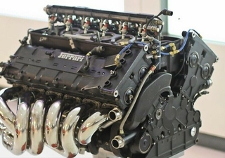
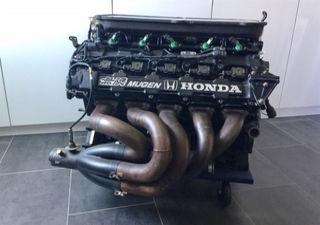
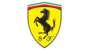
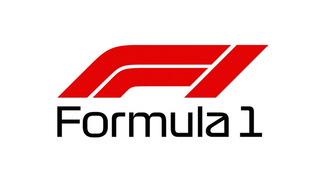

Jest to przeprowadzany regularnie (corocznie) od 1950 roku cykl najbardziej prestiżowych międzynarodowych wyścigów samochodowych, znany również jako wyścigi Grand Prix, a jednocześnie klasa biorących w nich udział jednomiejscowych samochodowych wyścigów o otwartym nadwoziu. Dyscyplina sportu zapoczątkowana w Europie, obecnie o zasięgu globalnym, organizowana w Europie, Ameryce Południowej, Ameryce Północnej, Azji i Australii. Podczas danego sezonu odbywa się od kilkunastu do dwudziestu kilku wyścigów, poszczególnych grand prix, na wydzielonych torach ulicznych i na specjalnie stworzonych do tego celu torach zamkniętych. Od sezonu 2014 wprowadzono nową generację silników napędzających bolidy Formuły 1. Są to turbodoładowane V6 o pojemności 1,6 litra wspierane przez układ elektryczny. Wycofano także system KERS, który mógł posiadać maksymalną moc 61 kW i dostarczać ją do kół tylko przez 7 sekund na okrążenie na rzecz układów odzyskiwania energii cieplnej (MGU-H) i odzyskiwania energii kinetycznej (MGU-K). Zrezygnowano jednocześnie z manualnego włączania układu przez kierowcę na rzecz sterowania komputerowego.
 
 Formula1 

O historii F1 słów kilka:
Pierwszy wyścig mistrzostw świata Formuły 1 rozgrywano na oczach króla Jerzego VI i królowej Elżbiety na starym lotnisku RAF (tor Silverstone) 13 maja 1950 roku. Był jednym z 7 wyścigów które odbyły się w pierwszym sezonie Formuły 1, który zdecydowanie należał do zespołu Alfa Romeo. O tytuł mistrza świata walczyli Argentyńczyk Juan Manuel Fangio i Włoch Nino Farina, z czego zwycięsko wyszedł ten drugi. W następnym sezonie swój pierwszy tytuł zdobył Fangio. Jednakże w wyniku wypadku podczas wyścigu nie zaliczanego do mistrzostw świata na Monzy nie startował cały sezon 1952.
Co to jest F1 i jak wyglądają silniki?